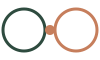

Story-Pose · Animation
Story-Pose · AnimationZwei Eltern-Kreise, verbunden nur über den Punkt in der Mitte — das Kind. Sie berühren den Punkt, nie einander. Immer die erste Lesart im Storytelling.
Verschränkt gelesen: der helle Ring läuft hinter dem Aprikose-Ring und wird zum offenen C, der Aprikose-Ring zum O — Co-Parenting. Der zweite Blick.
Die Domain copara.co zitiert das Zeichen. Punkt vor „co" immer in Aprikose. Monogramm-Pose für 16px (Icon, Avatar), Story-Pose für große Flächen & Motion.